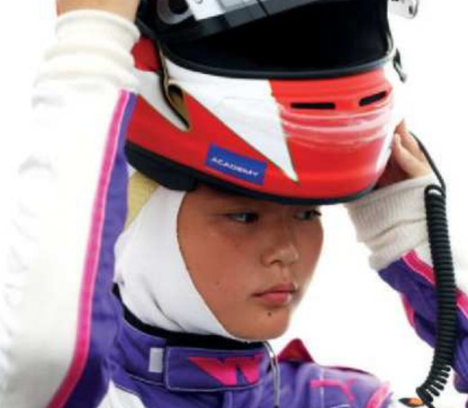

Sports verbs again
Complete the sentences with the correct sports verb.
2. In basketball you the ball on the ground when you run.
3. A goalkeeper can the ball with two hands.
4. In rugby, players the ball to each other.
5. Weightlifters very heavy weights.
6. You need a rope and a helmet to a mountain.
Watch the vlog
Watch the video. Who is the most amazing painter? Who can play the piano the best?
1. Who is the most amazing painter?
2. Who plays the piano the best?
3. What does the vlogger say he is the best at?
And you? Have you got something you're the best at?
Look at the table and complete the rules
| Superlative adjectives | |
|---|---|
| Short | She's the fastest player. |
| Long | She's the most amazing painter. |
| Irregular | Have you got something you're the best at? |
Now complete the rules.
2. We put the most before adjectives.
3. There are some adjectives, e.g. good – the best, bad – the worst.
Build the forms
Write the superlative form of each adjective. Don't forget the!
| Adjective | How to build it | Example |
|---|---|---|
| short | the + adjective + -est | fast → the fastest |
| short, ending in -e | the + adjective + -st | nice → the nicest |
| short, ending in -y | -y → -iest | easy → the easiest |
| one vowel + one consonant | double the last letter | big → the biggest |
| long | the most + adjective | popular → the most popular |
| irregular | a different word | good → the best · bad → the worst |
2. new →
3. healthy →
4. fit →
5. difficult →
6. good →
7. bad →
Joan and Victor
Complete the sentences with the superlative form of the adjectives. The adjective is on the yellow label above each box.

Joan MacDonald

Victor Wembanyama
Joan MacDonald is one of popularthe most popular women in their 70s on social media. She's probably fit and healthy person that age I know.
Victor Wembanyama is one of tall basketball players in the world. Does the article say he is good player in his team? Maybe Victor's got big feet in his team!
The biggest sports quiz in the world
Complete the quiz with the superlative form of the adjectives. Then choose the answer you think is correct.
Predict first — you'll listen and check in the next step.

1. Juju Noda is one of goodthe best female Japanese .
2. Lots of people think that is easy sport to learn.
3. is one of popular Paralympic sports.
4. is one of new Olympic sports.
5. healthy food to eat before you do sport or exercise is a .
Listen and check
Listen and check your answers to the quiz. Were your predictions right?
This checks Step 6 above — scroll back up to see the green and red boxes.
Your opinions about sports
Write four sentences with your opinions about sports. Use one word from box A and one from box B in each sentence.
| A | easiest · most boring · most difficult · most interesting on TV |
| B | do · learn · play · watch |
Superlatives about you
Write sentences with superlative adjectives about you. Use these topics, or choose your own.
Which is the best day of the week?
YouI think Friday is the best day of the week because I always finish school early. What about you?
Say because and give a reason, like in the example.